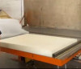
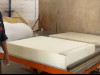
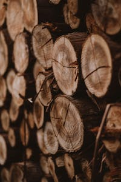
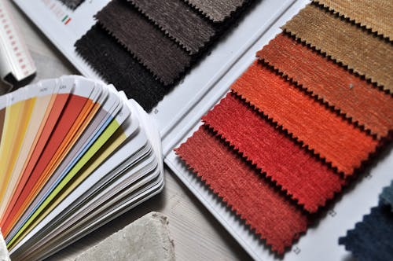

Nossas espumas
Trabalhamos com dois tipos de espumas a D30:

E a espuma D45:

Uma coisa muito importante sobre nossas espumas, e que temos o selo do Inmetro em cada uma delas ! Outro ponto importante é que todas as nossas espumas vão com uma manta de silicone por cima, muito conforto, não?
Nossas matérias primas
Uma coisa que nem todas as empresas mostram, mas que é muito importante os clientes saberem! As matérias primas:
Estrutura de Madeira
O esqueleto do nosso sofá é composto de madeira Eucalipto 100% reflorestado

Podendo suportar até 150kg, muito resistente, não acha?
Tecidos
Para dar ainda mais conforto, nada melhor que um tecido veludo anti alérgico, diretamente da Índia!

Temos variedades de cores em nossos tecidos, para combinar certinho com sua sala